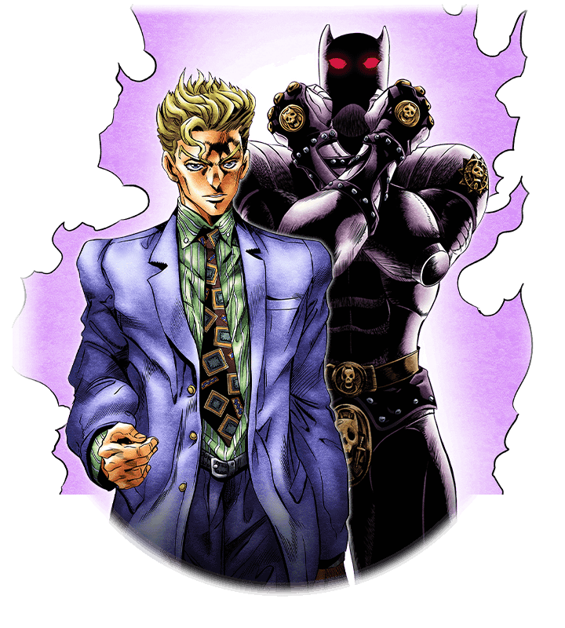
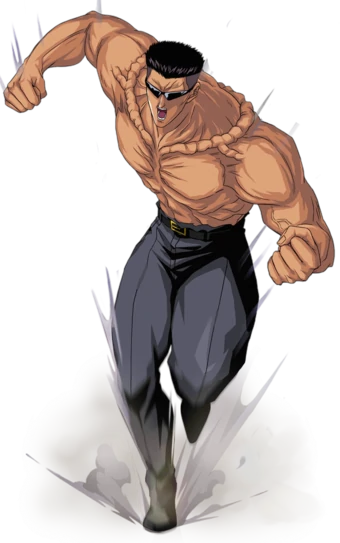
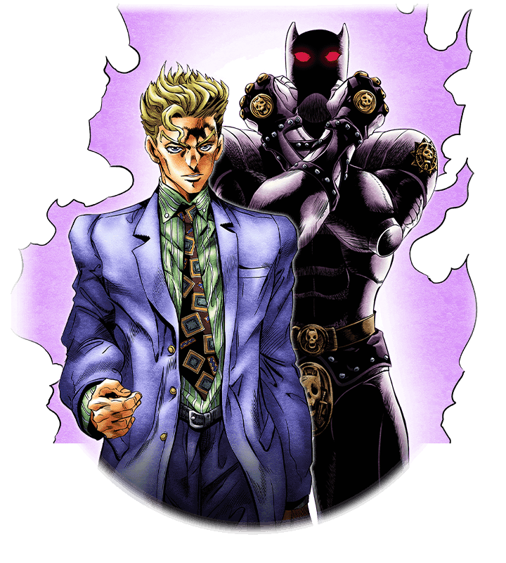
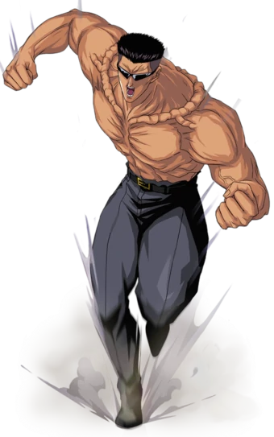

So, Toguro. I have to say, he is one of my favorite anime villains. And there's a reason for that: In spite of the fact that he breaks a major 'anime rule', he is one of the best, most effective villains in the series, and if you've watched the entire series, he's probably the villain you remember most, and most fondly. How does he break the rules? I'll explain. One of the simplest rules around is that, outside of DBZ, the main villain of the arc is never a basic brute force bruiser. Yes, they're the most powerful, but that is typically because they have a unique and unusual set of powers, combined with a lot of raw power to back those abilities up. Raw strength is never all the main villain of the arc has up his sleeve. Toguro, meanwhile, is raw strength embodied. In fact, the best way you can describe Toguro is 'He's a DBZ character who accidentally wandered onto the set, and no one had the guts to tell him he was in the wrong place'. But at the same time, that absurd raw power is part of what made him so great as a villain in the series.
The Dark Tournament arc was nothing but amazing. Not really did we have badass fights(many of them relying on clever tactics for victory as oppose to just "believe it yourself" power), but was a lot of development and emotional content behind it. The whole arc felt like a coming of age development for Yusuke especially with Genaki's death so it felt fitting. Moreover, the revelation of Younger Toguro actually not being completely a bad guy was really interesting, he was there to help grow Yusuke grow as a person in a roundabout way.
I think that both Toguro and Sensui are phenomenal villains, but out of the two, I like Toguro more. Mainly because I felt like he has a lot more of a connection with Yusuke and does a lot more for his development compared to Sensui. Edit: I also like that despite his appearance, he’s more than just muscle and is actually very intelligent. Kinda like Bane from Batman’s rogues gallery.